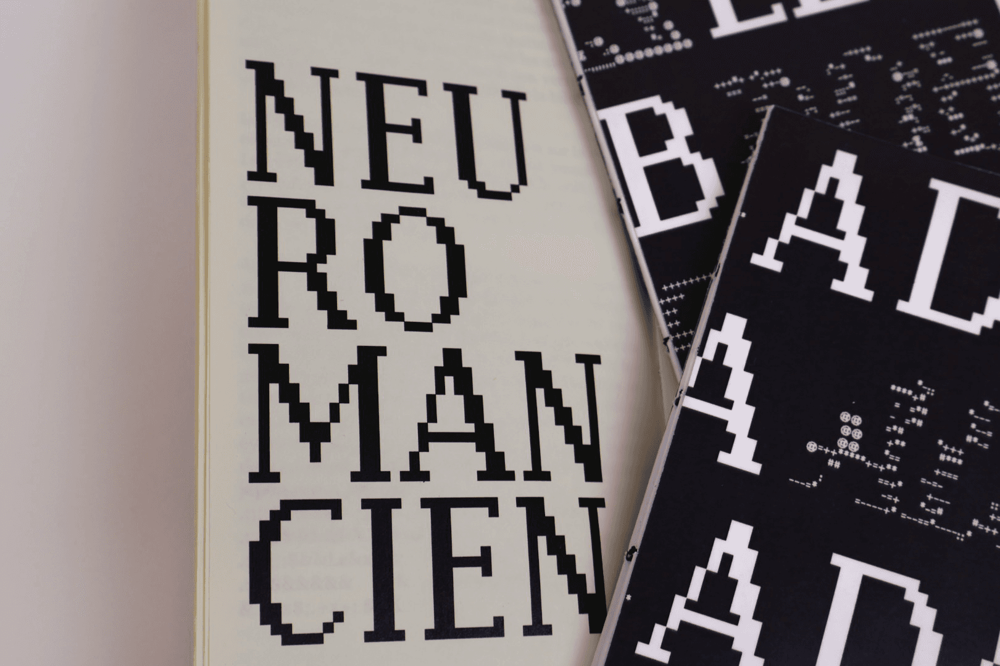
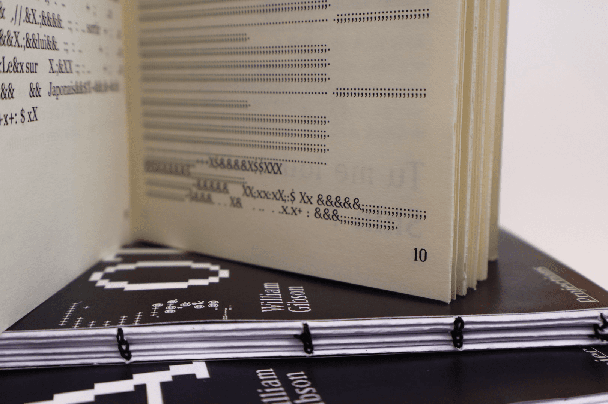
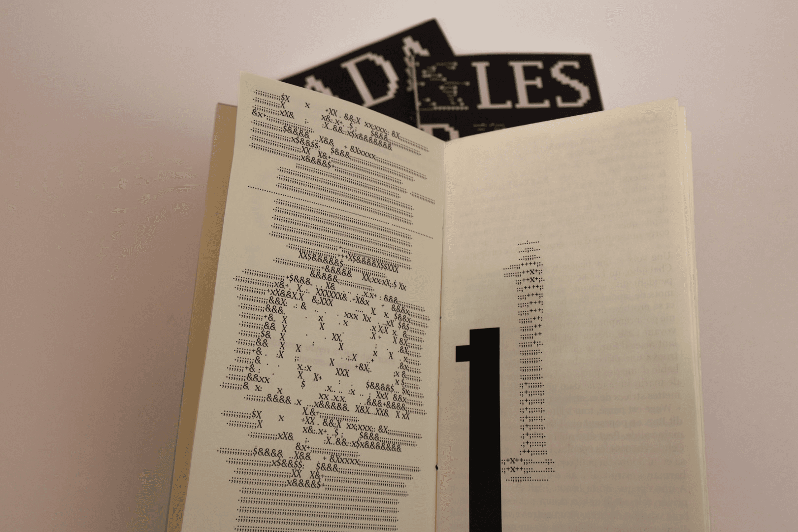
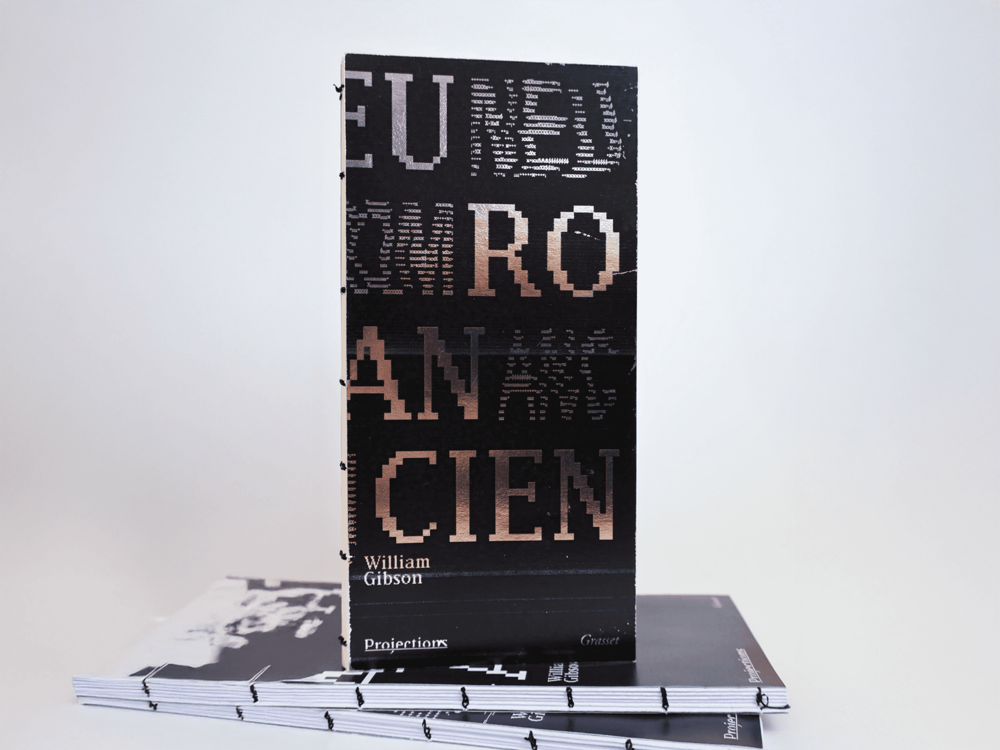

Projection
Intro
We developed NEO DECK's complete brand identity including logo design, visual systems, and custom website to establish their market position. Our strategic approach combined brand development with user-focused web design, resulting in enhanced recognition and improved conversion rates.
Deliverables:
- Direction artistique
- Identité visuelle
- Édition




Mon concept explore l’ASCII et les bugs graphiques en les considérant non comme des erreurs, mais comme des détournements ayant permis de générer des images à partir de codes. Ces formes abstraites illustrent l’idée que la science-fiction échappe aux cadres établis : chaque récit y invente ses propres règles, révélant des univers inconnus à mesure que l’on tourne les pages.
Projet suivant